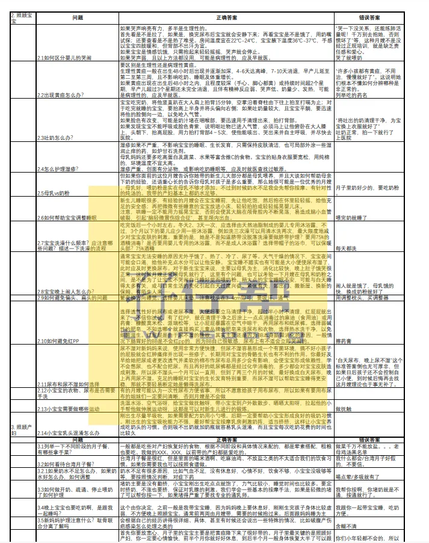
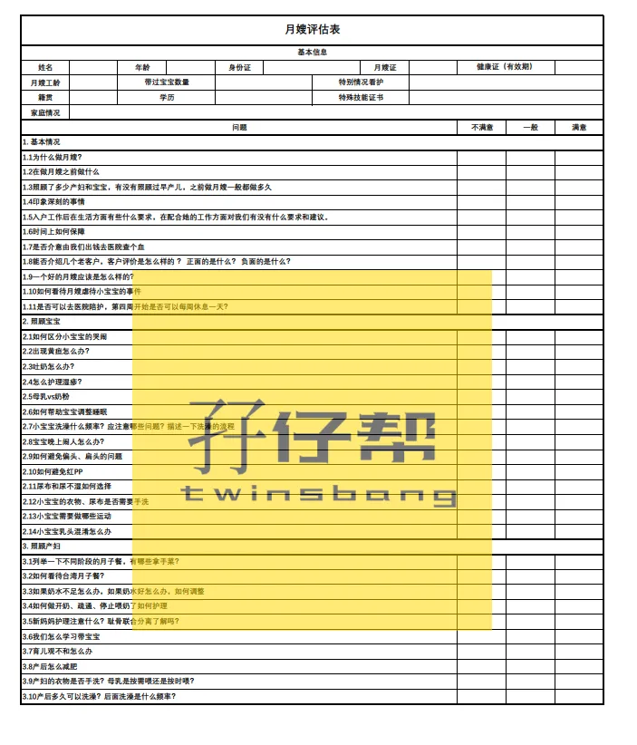

孖仔帮
公众号ID：twinsbang
关注
文|圆圈妈
网图|侵删
#先插播一则群通知#：第15期双胞胎跳蚤市场群已开放，公众号输入“赶集15”，扫码即可入群。
在我们的双胞胎社群，经常有人问，有没有专门带双胞胎的阿姨介绍（各地叫法不一，有称之为保姆，育儿嫂或育婴师，工作性质差不多，下文统称保姆）咱们后台也会收到关于请保姆的咨询。
比如：请两个还是请一个，如何分工？起步价多少？双胎如何加价？
不同城市，不同中介机构，服务项目不同，收费标准不一，而且是双胎，没有参考，加价多少全看中介的良心，这让很多新手父母操碎了心。
鉴于此，咱们号发起了这个调查：请保姆带双胞胎，你花了多少钱？
点此链接进入即可
请保姆带双胞胎，你花了多少钱？
问卷结果后续会在公众号上公布，希望真实的数据给到你有价值的参考，免得被不良中介坑了钱不说，还坑了可怜的俩娃！
欢迎有这方面经验的双胞胎家庭参与问卷调查，感谢您的分享。
很遗憾，说到请保姆，我是0经验。但请保姆的纠结，我却是一肚子的苦水无法发泄。
圆圈两岁前，主要照料者是他们的爷爷奶奶，我和圆圈爸都是白天工作，忙到三更半夜才到家。期间都未曾请过保姆，倒不是因为我的背后有多么强大的育儿军团，而是这里面有原因，有故事，今天这篇来分享。
着急请保姆的你也许不感兴趣，但是当你知道我没给双胞胎请保姆的原因，你可能会找到答案。
圆圈兄弟最难带的时候是1岁--1岁半，说这个阶段最难带，一点都不矫情。
正是学步期，睡眠倒退期，口欲期....所有人类幼崽成长发育中的首个敏感期全在这个时候陆续爆发：见到什么啃什么，哪里不平往哪走，看见啥都往嘴里塞，看见高的地方就往上爬，哪里硬就往哪里撞...还有手足间那数不尽的相爱相杀....
婆婆累到天天以泪洗面，叫苦不迭。我和婆婆的那点剑拔弩张的微妙关系也在各种压力下，变得异常紧张。
她数次提出要把圆圈兄弟带回老家，见我们不同意，又提出要请一个保姆打下手。
好，这个可以有！
我想，既能保住工作，又能天天看到娃，请个保姆就能解决，简直不要太划算。
然而，我是too young too simple，找个合适的保姆比当年找老公还难。
周边的中介找了一圈，熟人朋友问了一圈，网上也咨询了很多家政平台，依然无果。
要么嫌别人太老，干不了活，要么嫌别人太年轻，没经验，要么就嫌要的薪水太高，请不起，
婆婆嫌弃的理由更奇葩，说看应聘者照片，骨骼精奇，相貌不端...就知道这人不行，连印堂发黑，八字不合都扯出来了....
最后，婆婆在小区与一群大妈大婶闲聊时物色到一位阿姨，就在同小区里帮人带娃，正好有档期，婆婆看着也钟意，各方面都非常符合要求，正打算请过来试工的，但关键时刻，我却认怂了，拒绝了。
原因有三个。
1，我会嫉妒
说嫉妒心有点不恰当，应该说是我作为妈妈的本能吧，我不喜欢我的孩子亲近别人多于亲近自己。
我会因为两孩子被很好地照顾感到欣慰，但同时，我也会因为没有更多时间和孩子们待在一起而感到内疚，对于照料者和两孩子之间的关系又会产生妒忌心理。特别是当孩子哭闹不让我安抚而转向保姆求安慰的时候，我更是心伤到太平洋。
现在这个照料者只是他们的奶奶，我的小心脏承受能力就已经接近临界值，有时候圆圈耍性子不要我抱非要争着奶奶抱时，我就有点失宠的感觉，更何况他们哥俩的争抢对象竟然是相处没多久的陌生人。
一想到自己不被需要，连保姆都不如，我敢发誓，我的大拳头在握紧，我的眼里只有醋意在熊熊燃烧。
2，我很挑剔
挑剔到哪怕用天价的薪水都请不到一个满意的保姆，把整个深圳掘地三尺都未必有合适的人选。
我心目中的理想保姆是会像我一样，用心照顾孩子，无论什么时候，只要我在场，都会尊重我和孩子之间的独特联结，并且会促进我和孩子们之间的关系。
这意味着，当我离开时，这个人就承担主要照料者的角色，当我回来和孩子在一起时，照料者会退后，把这个角色还给我。
然而，这样的保姆，真的存在吗？还是我自己假想的。
反正，比登天还难吧！
3，我很矛盾
一方面，我希望我请的保姆能与兄弟俩相处融洽，但是另一方面，又不希望保姆与两孩子的关系太过于亲密，这样会让我感觉受到威胁，因此，我可能会对保姆产生莫名的敌意，会特意放大她的缺点，甚至哪天不高兴了就想把保姆换掉，以寻求内心的平静。
我知道我挑剔情有可原，但我这样的心态万万不可取。
照料者和孩子能建立亲密有爱的联结，是件好事，是最符合孩子最佳利益的，是应该得到尊重，但却因我的一己之私，让孩子去适应像旋转门一样更替的照料者，这显然也不是我想要的结果。
以上3个理由，婆婆是不会理解的，我也没打算解释，总之很心累，有口说不出的无力感。
最后与圆圈爸商量了下，让公婆回去老家休息一段时间，换我爸妈过来照顾圆圈。
请保姆一事就这么过去了。
现在看来，觉得当年的做法欠妥，如果当初没有我的那么多矫情，那么多顾虑，四位老人也不至于那么辛苦忙碌。
而且看得出来，婆婆其实也是心疼钱，内心上不想请保姆，她可能更希望我能兼顾工作的同时，也有时间和精力带下娃，分担下家务。
然而，我即没有万贯家财，又没有三头六臂，如何让一个女人带着两个娃活成千军万马。
所以，家有双胞胎，如果自己无法亲力亲为地抚养且稍微有点经济能力的，那就请保姆带吧！
有很多小白妈妈问我，到底要怎么做才能轻松养育双胞胎？
这还不简单！用钱呐！
不管有没有老人家带孩子，花钱请保姆带，真的...在双胞胎3岁前，这绝对是上策。
除了费钱，什么都好，家庭氛围其乐融融，少了很多鸡飞狗跳。
此时不得不承认，钱若用到刀刃上，真的是件大快人心的事情。
好啦，问题来了：我愿意花钱，怎样找靠谱的保姆？还会带双胞胎那种！
资源我没有，但是如何面试保姆，我倒有一招，这是我去考育婴师资格证时参悟出来的：请保姆，眼缘真的很重要，有时候甚至可以超越所谓的标准。
证书易得，对眼的保姆则是千金难买。
正如《不缺席的妈妈》作者埃里卡·柯米萨所言：当你面试一个照料者，要考虑到肢体语言，相信你的直觉，并关注事实。
如果你不喜欢她，也别指望她会喜欢你的双胞胎，她对你的孩子们没有爱心没有热情，那请她来家里过年吗？
这里有一份作业可以拿去抄，来自双胞胎妈妈群的姐妹们，分享的面试照料者经验，含评估表和面试问题，如需Excel档，请在公众号后台输入【请保姆】获取。
今日互动话题
#给双胞胎请保姆那些囧人囧事#
评论区聊一聊呗！
微信公众号：孖仔帮
ID : twinsbang
专注双胞胎孕育，养育，教育经验分享
扫码关注我们
点一下你会更好看耶


